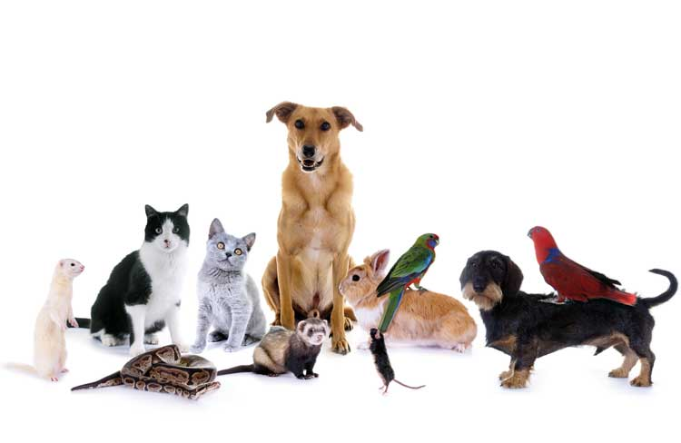

Cabinet vétérinaire
Brive la Gaillarde
La passion nous pousse à devenir meilleurs
Bienvenu sur le site du cabinet vétérinaire de Brive la Gaillarde en Corrèze.
Nous prennons soin de vos animaux, et les soignons comme nos propres amis.
- Chats;
- Chiens;
- Lapins;
- Chevaux;
- Vaches;
- Licornes,
Notre équipe s'occupent de vos animaux, n'importe lesquelles qu'ils soient.

Équipé de nouveaux locaux et de nouveaux ordinateurs, le cabinet vétérinaire s'améliore pour vous permettre de meilleurs soins pour vos AMImaux.
Le cabinet vétérinaire fait peau neuve, et change d'adresse.
À partir du 31 février 2135, les locaux se situeront à l'adresse ci joint ici